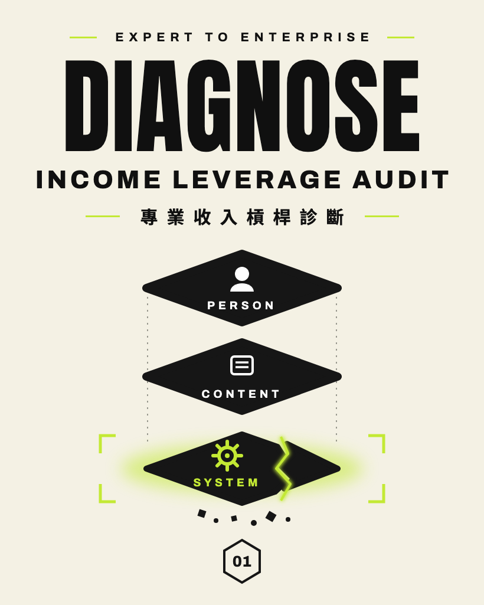
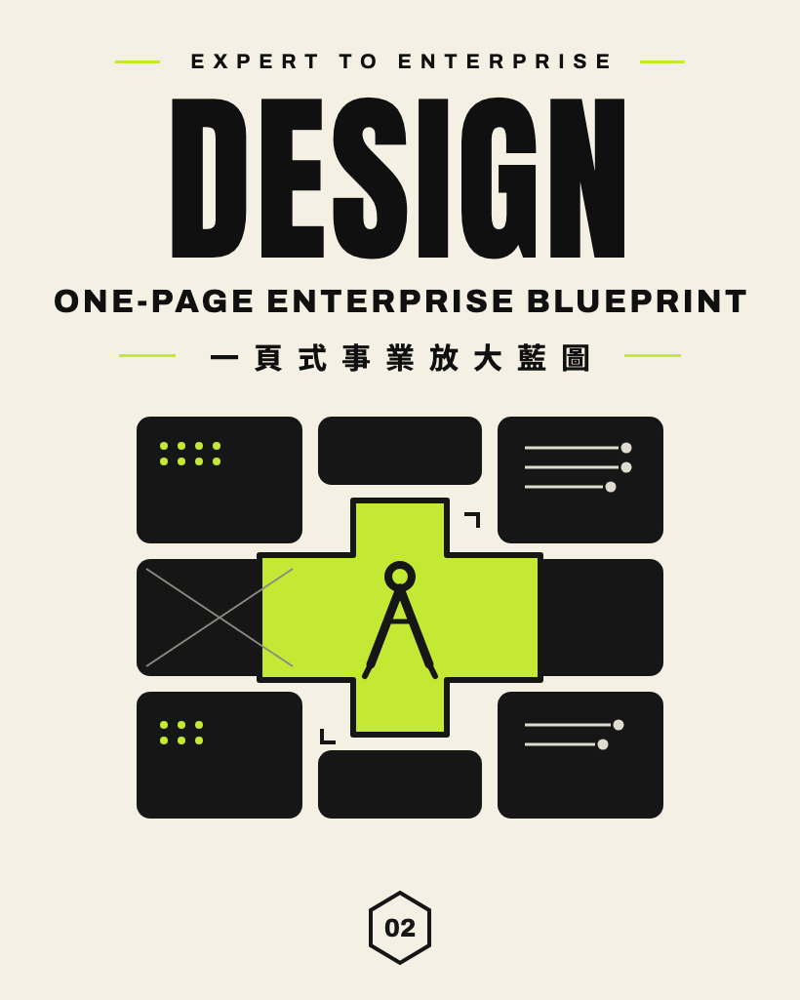
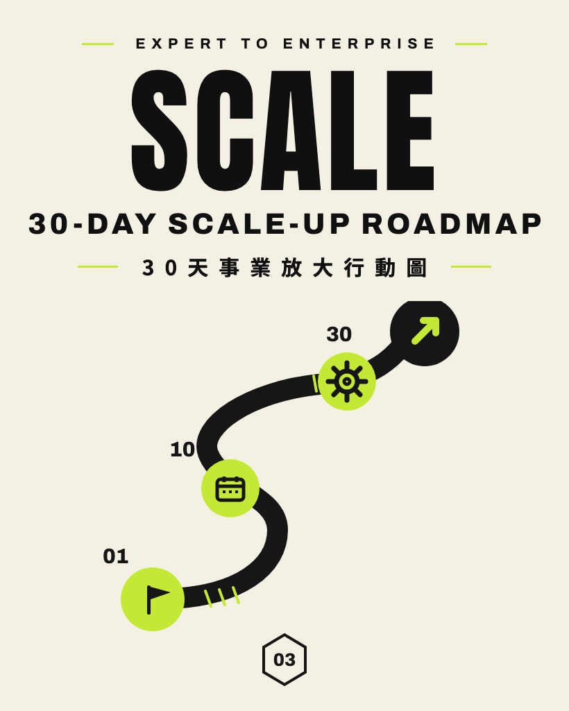
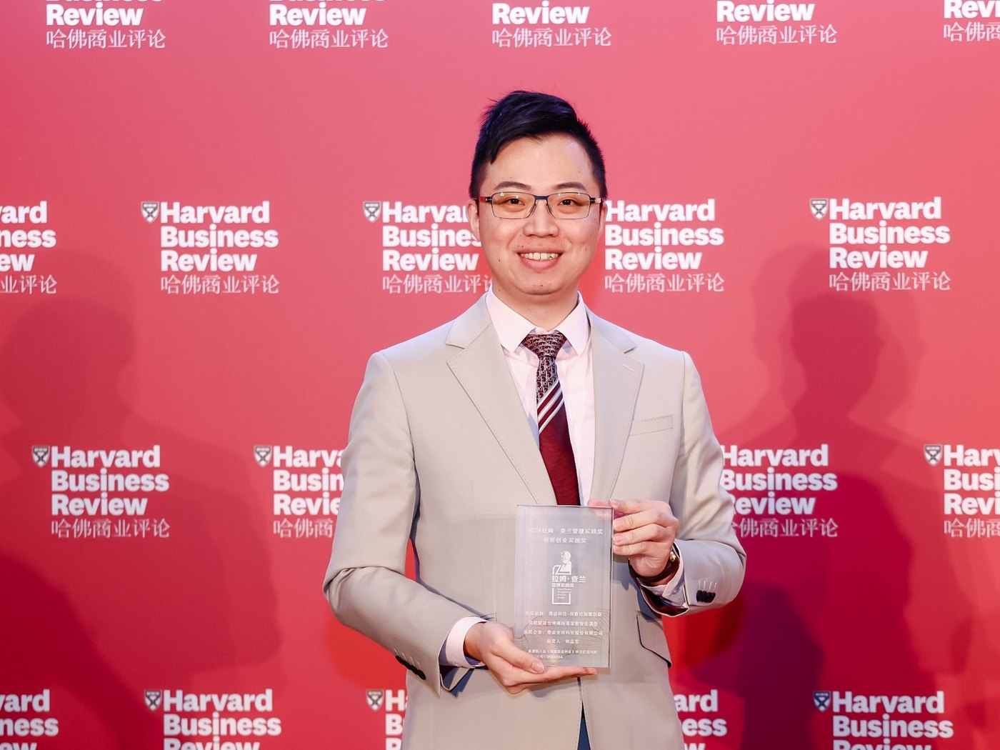
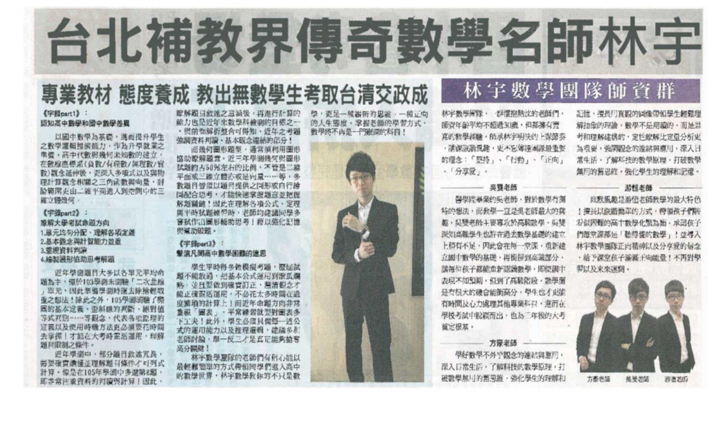
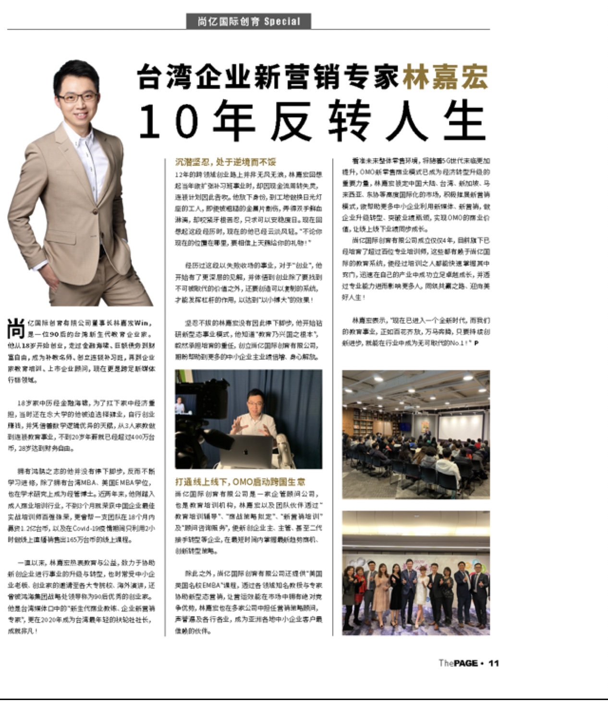
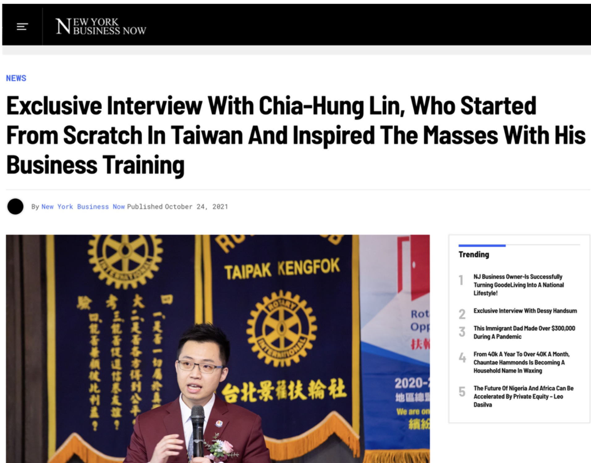

01DIAGNOSE
專業收入槓桿診斷
Income Leverage Audit
找出你目前的收入，主要依賴 「本人、內容，還是系統」， 看見真正限制成長的瓶頸。
這一份的任務就是：知道問題在哪裡。

EXPERT TO ENTERPRISE
一份專業・三次複利
專業收入升級實戰
把你的專業， 變成市場認可、願意買單、 能夠放大的影響力資產。
從診斷、設計到行動，三步找出你的下一個成長槓桿。
THE REAL PROBLEM
你可能已經有客戶、有口碑， 也有穩定收入。 但只要你不出席、不授課、 不諮詢、不親自服務——
收入是不是也跟著停下來？
你越厲害，行程越滿； 客戶越多，時間越少； 事業看起來一直成長， 你卻始終是整套商業模式裡 最難被取代的那個人。
SOUND FAMILIAR?
每一筆收入，都要用你的時間親自交換。
每個客戶都要重新說明、重新提案、重新客製。
做過很多內容，卻沒有形成可重複銷售的產品或服務。
有方法、有案例，團隊卻接不走，也教不會下一個人。
有流量、有舞台、有合作，卻沒有完整的產品與收入階梯承接。
一旦你暫停工作，整個事業的產出與成長也跟著暫停。
勞務型收入本身不是問題。 問題是，當它成為你 唯一的收入方式——
你的專業再強， 也會被一天只有 24 小時綁住。
你已經證明自己能靠專業賺錢。
下一步，不是讓行程更滿、
再多接幾個案子，
而是重新設計你的商業模式。
這門課「不適合」你，如果你……
✕只想學口才、台風與演講技巧
✕期待一套快速爆紅、成為網紅的方法
✕還沒有可被市場驗證的專業或實戰經驗
✕只想聽課，卻不願重新梳理自己的事業
✕只追求短期成交，不想建立長期品牌資產
這門課「適合」你，如果你……
✓ 你是企業主、企業二代或高階經營者 想把個人影響力升級為企業影響力
✓ 你是已有成果的創業家或專業人士 想把多年經驗提煉成自己的方法論與 IP
✓ 你是顧問、講師或培訓機構經營者 想從「靠自己授課」升級成可規模化的教育事業
✓ 你希望打造自己的企業大學 把知識變成能培養員工、客戶、夥伴與接班人的系統
✓ 你已經有事業基礎，正在尋找第二成長曲線 想透過演說、IP、教育與 AI，放大自己的商業影響力
FREE RESOURCES
我先送你 3 份見面禮。
Income Leverage Audit
找出你目前的收入，主要依賴 「本人、內容，還是系統」， 看見真正限制成長的瓶頸。
這一份的任務就是：知道問題在哪裡。

One-Page Enterprise Blueprint
一次盤點客群、價值、產品、 收入、通路、交付與合作， 把零散的專業整理成 一套可以被市場理解、 成交與複製的商業模式。
這一份的任務就是：知道事業應該長什麼樣子。

30-Day Scale-Up Roadmap
根據你的定位、內容、產品、 成交與合作現況，排出未來 30天最重要的優先順序， 知道先做什麼、後做什麼、 什麼暫時不要做。
這一份的任務就是：知道下一步怎麼走。

從診斷、設計到行動，三步找出你的下一個成長槓桿。
THE FRAMEWORK
靠自己賺、讓內容賺、讓系統賺。 真正的升級， 不是再多賣一堂課—— 而是讓同一份專業， 持續創造三種收入與事業價值。
STAGE 01｜勞務型
授課、演講、顧問、教練、內訓與專業服務，主要由你本人交付。
這一階段要做的，不是拼命增加工作量，而是找到高價值客群、建立旗艦方案，提高每一次本人交付的價值。
STAGE 02｜槓桿型
把反覆交付的經驗與方法，重新設計成團體計畫、線上課、會員、社群、工具包、訂閱或混合式產品。
不是把原本的服務錄成影片，而是讓方法能被重複購買、多人學習，跨時間與地區交付。
STAGE 03｜資產／資本型
當方法、品牌、教材、案例、數據與交付標準成熟，就能發展成師資、授權、認證、代理、平台、跨域合作，甚至能被投資與估值的資產。
重點不是急著募資，而是先建立一套離開創辦人本人，仍能維持價值與品質的系統。
你不需要放棄親自服務。 本人服務能帶來高品質現金流、 真實案例與第一手市場洞察—— 它應該被保留， 而且變得更有價值。
真正要改變的是： 別再讓本人服務， 成為唯一能創造收入的方式。
THE METHOD
它不是多做一份內容、 再開一門課， 而是把每一次專業交付， 持續累積成內容、產品 與系統資產。
留下真實案例
萃取成觀點與方法
設計成可重複銷售的產品
累積成能被團隊與夥伴
放大的系統
5 KEY LOOPS
不是五個章節， 而是一套會持續運轉的事業系統。
LOOP 01
待機
讓市場在特定問題上， 優先想到你。
LOOP 02
待機
讓做過一次的內容， 不再只創造一次價值。
LOOP 03
待機
讓客戶買的不是你的時間， 而是一個清楚的結果。
LOOP 04
待機
讓一場表達不只得到掌聲， 而是累積成你的信任資產。
LOOP 05
待機
讓你不再只靠自己增加產能， 而是透過夥伴擴大市場。
讓專業被看見・被產品化・被成交・被合作
五個環節共同累積同一件事： 可持續放大的事業資產。
YOUR MENTOR
學歷
現任企業
學術經歷
社團經歷
重要獎項

HBR CHINA・2024「創新創業實踐獎」得主 《哈佛商業評論》中國年會頒發
MEDIA COVERAGE
從 18 歲台北補教界傳奇數學名師， 到國際教育家。
18 歲踏入家教行業，就受到新聞媒體報導。
受訪分享高中與國中數學課綱的教學觀點。

教學過的學生近萬人，被稱為傳奇名師。

以「台灣企業新營銷專家」受國際雜誌專訪。
26 歲加入扶輪社，28 歲獲選最年輕接任社長。

獲美國紐約雜誌專訪。
ON STAGE, WORLDWIDE
同一套方法， 在不同城市與市場持續發生。
ENDORSEMENTS
WHERE ARE YOU STUCK?
如果你一停下來，收入就跟著停下來——
現在最重要的，不是再增加工作量，而是建立一個對象清楚、成果具體、價值更高的旗艦方案。
如果你已經有方法，卻每次都要重新交付——
現在最重要的，不是急著錄線上課，而是先把經驗整理成能重複解決問題的內容產品。
如果你已經有產品，團隊與夥伴卻接不走——
現在最重要的，不是立刻談授權或募資，而是先把方法、教材、品牌與交付標準整理成系統資產。
你不需要現在就知道所有答案。 但你必須先知道—— 目前真正綁住你的，是：
定位內容產品成交合作
你已經用專業證明了自己。 現在，先看懂如何保留 最有價值的本人服務， 把能重複的經驗變成內容， 再把成熟的方法 逐步累積成系統與事業資產。
靠自己賺→讓內容賺→讓系統持續創造價值
E2E™ 事業放大策略包・VIP 活動邀請
FREE RESOURCES
填寫後即可取得三份事業診斷工具。
我們也會持續分享如何放大你的專業、打造事業的方法。
E2E™ 事業放大策略包與 VIP 活動邀請
將寄送至你填寫的 Email。